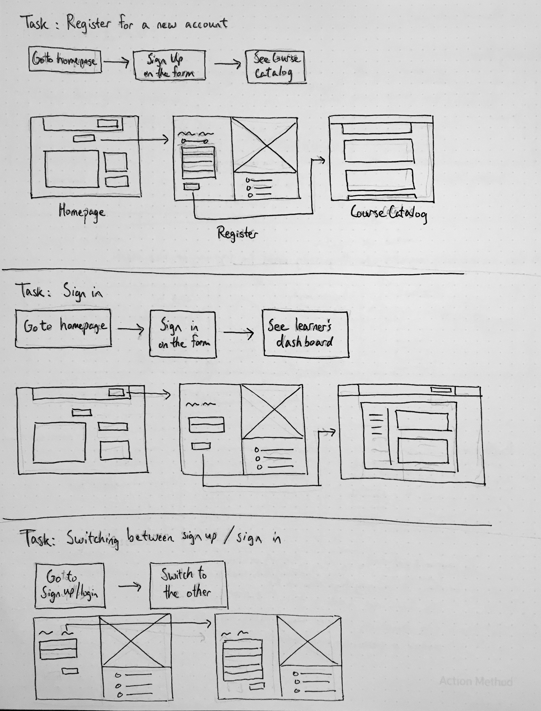
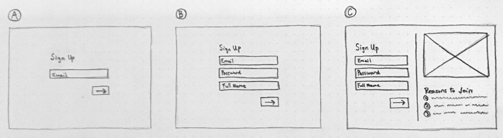

Redesigning the MongoDB University sign-up experience to motivate new users to create an account.
Problem The MongoDB University team saw an opportunity to improve its sign-up page with the goal of increasing user conversion rates.
They identified the lengthy sign-up form, which consisted of 16 different fields and inputs, as a usability issue that overwhelmed users and deterred some of them from signing up for a MongoDB University account.
The team asked me to redesign the sign-up page and create an appealing experience that would motivate more new users to join MongoDB University.
Logistics
- Project Type: Internship
- Team: 1 Designer, 1 Product Manager, 2 Developers
- My Roles: Research, Interaction Design, User Testing
- Time Frame: 3 Weeks
- Confirm that there are usability problems with the existing sign-up experience
- Learn about the usability problems and users' pain points
- Learn about user's expectations of a positive sign-up experience
- Research other sign-up pages from popular web apps
- Investigate the common qualities or characteristics of effective sign-up pages
To achieve these learning goals, several research methods were conducted:
- User interviews
- Competitive analysis
- Literature review
For the user interviews, 6 different users who had recently signed up for MongoDB University in the past week were interviewed. The interview questions focused on learning about users' experiences with signing up for MongoDB University as well as their expectations of a positive sign-up experience.
Regarding competitive analysis, sign-up pages from popular user-facing products were studied using heuristic evaluations. Some of the products included Yelp, Dropbox, Facebook, Airbnb, Github, and Google.
For literature review, several articles by UX bloggers who also designed sign-up pages were reviewed. Many of these designers wrote about best practices for sign-up pages based on their own experiences.
After conducting these research methods, the main research insights that were gathered were:
- The existing MongoDB sign-up page had several usability problems: overwhelming number of input fields, inapplicable fields, such as "programming language" for non-coders, irrelevant personal fields, such as "home address", and accidentally navigating to sign-up instead of sign-in, vice versa
- The primary stakeholder groups consisted of software developers and database administrators
- Sign-up interfaces should be: simple and short, relevant to the product, playful, memorable, persuasive in terms of showing value proposition, and responsive to user input
- Sign-up interfaces should not be: long, confusing, intrusive, or exclusive with regards to catering only towards narrow user groups
- Short, concise: include the minimal number of fields necessary and hide/simplify information if possible to increase approachability
- Interactive, responsive: show immediate feedback for validated fields and error fields, caps lock, etc., and fedback messages next to corresponding fields
Before jumping into sketching out interface details in wireframes, the overall primary user tasks were determined to understand how the sign-up page would function at a high level:
- Sign-up
- Sign-in
- Recover password
- Switch from sign-up to sign-in, or vice versa
For each of these tasks, user task flows were drawn using low-fidelity sketches.

Next, the details of each step of the task flows were fleshed out to create wireframes.
Several different UI ideas of the sign-up and log-in pages were brainstormed. Each of these UI designs addressed the design criteria to varying degrees:

Eventually, after peer review with other designers, the UI design was selected based on how well it fulfilled the design criteria, and digital wireframs were then created.
These wireframes were connected together to create a medium-fidelity Invision prototype of the new MongoDB University sign-up page.
User Testing After a medium-fidelity prototype was created, user testing was conducted to learn about how well, if at all, users would be able to perform the primary use case tasks using the new sign-up interface.
The user tests were conducted at medium-fidelity rather than high-fidelity so that feedback could be gathered earlier and that there could be a focus on designing core functionalities of the interface before addressing visual design polish.
The main learning goals of the user testing were to:
- Learn about users' first impressions
- Observe users complete the benchmark tasks: create a new account, sign in with an existing account, and recover password
- Learn about users' thoughts and feelings as they move through each step of the task
- Learn about users' pain points, confusions, or errors
- Learn about what the user would like to change, add, or remove
Each user testing session consisted of a task walkthrough and follow-up interview to learn more about the users' decisions. A total of 6 individual user tests were conducted. However, due to time constraints, only software developers were recruited for these sessions. A future improvement would be to also recruit database administrators in order to more accurately represent the diverse stakeholder groups.
After conducting qualitative coding and quantitative analysis on the user testing results, the main testing insights revealed that:
- Many users' first impressions of the sign-up page were that it was short, simple, and straightforward
- All the users were able to complete each task with little to no difficulty
- Users liked the UI elements that showed responsive feedback, such as check marks for fields
- Users recommended some UI tweaks, such as returning to sign-in after password recovery, greying out continue buttons until fields have been completed, and auto-filling the email field in password recovery based on past sign-in attempts
- Condensed the sign-up to a single page format from a double page format to allow users to see all the fields at once; this was actually based on input from the project's product manager
- Improved flow for password recovery by updating a button to return to sign-in
- Increased UI responsiveness by showing the "continue" button as accessible only after the form had been completed
- Increased convenience for password recovery by auto-completing email input
To iterate from the medium-fidelity wireframes to high-fidelity mockups, the MongoDB University design system was utilized. The design system provided numerous working UI components, as well as guidelines and design patterns for how components should be used.
One of the unique aspects of the design is the right-hand side area which shows an illustration and a set of facts.
The colorful illustration was meant to convey a sense of excitement and playfulness that promote the upbeat, positive mood of the MongoDB University brand. Moreover, the three facts acted as selling points and value propositions for potential new users.
The design also features an emphasized, interactive label titled "Get Started" or "Sign In" that allows users to toggle back and forth between the sign-in and getting started pages in case users accidentally navigate to one page instead of the other. Next Steps After the high-fidelity mockups were created and approved, an Invision prototype was delivered to the MongoDB University platform development team to implement the front-end redesign.
(Update: December 2018) The redesigned sign-up page has been implemented and launched live on the MongoDB University home page!